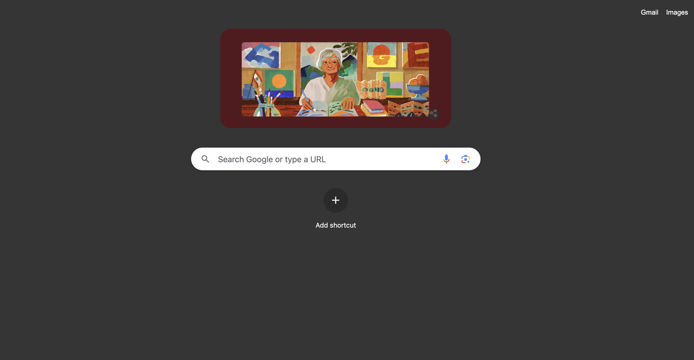

I am learning to build simple and effective frontend web
applications
Projects
CV
For one of my final university modules, I was tasked with
building a portfolio in relation to my future career. As I'm
looking to do web development, I thought there was no better way
to do this than build a website from scratch using code. This is
my first ever website that is online for the world to see...
At school, I never had the option to do Computer Science or
anything programming-related. It wasn't until my first year of
university, when I was tasked with building a homepage using
HTML and CSS, that I started to learn about anything development
related.
In my spare time when I'm not working on university projects or
learning development, I live quite an active lifestyle. I play
football and basketball, and also
run.
Education
2018 - 2020
A-Levels
Cedars Upper School
I achieve three A-Levels A-C in Creative Media, Spanish and
English Language
2021 - Present
Media Communications (BA)
UAL:
Three years spent living in South East London
Skills
In my three years of study, I have learned how to use a number
of technologies- which is not limited to web development related
software. This includes:
HTML & CSS
JS ES6
TailwindCSS
Adobe Cloud
Microsoft
Office
Git / GitHub
Projects

Harvard Referencer
In my 3 years at university, I used a Harvard referencer
thousands of times. So I made one using Vanilla JS.
To-Do List
A classic Javascript Project. A vanilla JS to-do-list.